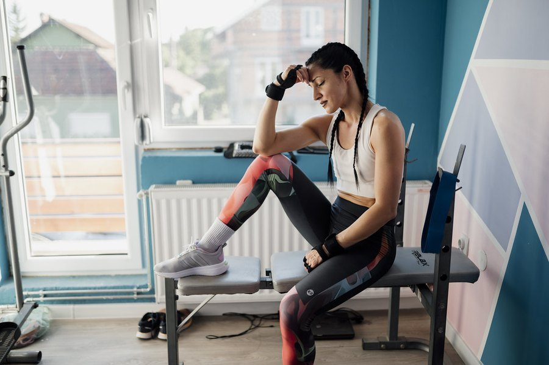

Morning Joint Stiffness: What It Means and What Helps
Almost everyone feels some creak getting out of bed. Here's how to tell ordinary stiffness from an early arthritis signal, and what actually loosens things up.

Key takeaways
- Stiffness that eases within 20 to 30 minutes of moving is usually normal — a short warm-up period joints need after hours of stillness.
- Stiffness lasting 45 minutes or longer, especially in matching joints on both sides, fits the pattern doctors associate with inflammatory arthritis.
- Overnight stillness thickens the joint's own lubricant (synovial fluid), which is the main mechanical reason for the tightness.
- Movement is the actual fix. Gentle motion restores circulation and thins that fluid back out faster than rest ever will.
- Swelling, warmth, redness, or fatigue alongside stiffness are reasons to see a doctor rather than wait it out.
Morning joint stiffness that fades within 20 to 30 minutes of moving around is usually just how joints work after hours of stillness, not a disease. Stiffness that lasts 45 minutes or longer, especially in matching joints on both sides of the body, points toward arthritis and is worth mentioning to a doctor.
Almost everyone feels some creak getting out of bed. What separates ordinary stiffness from an early warning sign has less to do with whether it happens and more to do with how long it sticks around, and whether the same pattern repeats every single morning.
What causes morning joint stiffness?
Joints rely on synovial fluid, a thick lubricant that keeps cartilage gliding smoothly against itself. Overnight, with the body still for six to nine hours, that fluid doesn't circulate the way it does during normal daytime movement, and it thickens slightly around the joint. Add a drop in blood flow to the area and a dip in nighttime cortisol, which has a mild anti-inflammatory effect that fades before waking, and the result is a joint that feels tight, achy or creaky for the first several minutes of the day.
None of that means something is wrong. It's closer to an engine that needs a minute to warm up before it runs smoothly. Gentle movement, a short walk to the kitchen, a stretch in bed before standing, restores circulation and thins the fluid back out quickly in most people.
Why does stiffness improve once you start moving?
Motion itself is the treatment. Each pass through a joint's range of motion helps pump synovial fluid back into circulation and nudges blood flow toward the surrounding muscles and tendons. That's a big part of why stiffness that disappears within half an hour of light activity, walking to make coffee, climbing a few stairs, is rarely a red flag on its own.
The speed of that improvement is actually one of the more useful clues doctors rely on. Mechanical stiffness from ordinary wear tends to ease quickly and predictably once you're up. Inflammatory stiffness is slower to let go, and sometimes barely responds to movement until well into the morning.
How long should normal morning stiffness last?
As a rough guide, stiffness that clears within 30 minutes and affects one or two joints, often ones you used hard the day before, usually reflects ordinary wear or mild osteoarthritis. Stiffness lasting 45 minutes to several hours, especially in the same joints on both sides of the body, fits the pattern doctors tend to associate with inflammatory arthritis.
That 30-minute mark isn't an exact medical cutoff, more a useful rule of thumb clinicians reach for when taking a history. Try tracking how long yours actually lasts for a week or two before your next appointment. A specific number is far more useful to a doctor than a vague 'it's stiff in the mornings.'
Could it be osteoarthritis?
Osteoarthritis is the most common joint condition tied to morning stiffness, and it becomes more likely with age, past injury, and extra weight on weight-bearing joints like the knees and hips. Its stiffness is typically brief, localized to one or a few joints, and often worse after any period of rest, not just overnight; think sitting through a long movie or a car ride.
Cartilage in an osteoarthritic joint has thinned or roughened, so the surfaces don't glide quite as cleanly. A short warm-up smooths that out for most of the day, which is part of why people with osteoarthritis often feel noticeably better once they're moving, then stiffen again after sitting still for a while.
Could it be rheumatoid arthritis or another inflammatory condition?
Rheumatoid arthritis, psoriatic arthritis and ankylosing spondylitis tend to produce a different pattern: stiffness that's longer, often over an hour, affects joints symmetrically (both wrists, both knees), and comes with visible swelling, warmth or redness. Fatigue and a general run-down feeling frequently ride along with it, not just the joints.
This distinction matters because inflammatory arthritis tends to respond best to treatment started early, before much joint damage has built up. A doctor can usually tell the two patterns apart from a history and exam alone, then confirm with bloodwork or imaging if needed.
What about fibromyalgia?
Fibromyalgia can also cause a stiff, achy feeling on waking, but it tends to come with widespread muscle tenderness rather than clearly swollen joints, and it's often paired with poor sleep and fatigue that doesn't fully lift with rest. It's a reasonable thing to raise with a doctor if a joint-focused explanation doesn't quite fit what you're feeling.
Does sleep position or mattress play a role?
To a point, yes. Sleeping curled tightly, or on a mattress that doesn't support the spine and hips, can leave muscles and joints held in an awkward position for hours, adding a mechanical layer of stiffness on top of anything else going on. A supportive mattress and a pillow that keeps the neck roughly level with the spine help some people notice less stiffness within a week or two of switching.
Temperature matters too. Cold rooms can make joints feel tighter, partly because blood vessels narrow slightly in the cold and partly because people tense up against the chill without realizing it. A warm shower, or a few minutes under a blanket before getting up, is a low-effort first move worth trying.
What helps loosen stiff joints in the morning?
- Move before you're fully out of bed. A few slow ankle circles, knee bends and shoulder rolls start the process while you're still horizontal.
- Take a warm shower. Heat relaxes muscles and tendons and can make the first ten minutes of the day noticeably easier.
- Walk before you sit down anywhere. A short walk, even to the bathroom and back twice, does more than standing still for the same amount of time.
- Stay hydrated through the evening. Cartilage is largely water, and mild overnight dehydration may make stiffness feel a little worse.
- Keep the bedroom reasonably warm. A cold room adds muscle tension on top of ordinary joint stiffness.
- Stretch gently, not forcefully. Ease into a joint's range of motion rather than pushing through sharp pain.
Does the type of mattress or pillow actually matter that much?
It's a smaller factor than weight, activity or the underlying cause, but it's not nothing either. A mattress that's sagged in the middle, or one far too soft or firm for your body type, can leave hips and shoulders twisted slightly out of alignment for most of the night. If stiffness is worse on one side consistently, or concentrated in the shoulder and hip you sleep on, it's worth looking at the mattress and your usual sleep position before assuming it's purely joint-related.
Can diet or body weight affect joint stiffness?
Extra body weight adds direct mechanical load to the knees, hips and lower spine, and fat tissue itself produces inflammatory signals that can make joints more reactive. A modest reduction in body weight, in the range clinicians often describe as 5 to 10 percent, has been linked to meaningfully less knee osteoarthritis pain in research on the condition.
Diet's role is softer, though not nothing. An eating pattern heavy in fried food, refined carbohydrates and sugary drinks is associated with higher markers of inflammation in several studies, while one built around vegetables, fish, olive oil and nuts tends to track with less of it. See our anti-inflammatory foods list for specifics on what to eat more of.
| Pattern | Typical duration | Other clues |
|---|---|---|
| Ordinary / mechanical wear | Under 30 minutes | One or two joints, often ones used hardest the day before |
| Osteoarthritis | Usually under 30 minutes | Worse after any rest, not only overnight; weight-bearing joints |
| Rheumatoid or psoriatic arthritis | Over 45-60 minutes, sometimes hours | Symmetrical joints, visible swelling or warmth, fatigue |
| Fibromyalgia | Variable, often hours | Widespread muscle tenderness, poor sleep |
| Gout flare | Sudden and severe, often one joint | Intense pain, redness and heat, often the big toe |
Does age alone explain why stiffness gets worse over time?
Partly. Cartilage naturally thins a little with age, tendons and ligaments lose some elasticity, and the fluid-producing lining inside a joint becomes slightly less efficient. All of that adds up to a longer warm-up period than you needed at 25, even without any specific disease being present.
That said, 'I'm just getting older' is worth double-checking rather than assuming outright, especially if stiffness has changed pace suddenly, gotten noticeably worse over a few months, or spread to joints it never used to touch. A gradual decade-by-decade shift is one thing; a sharp change over a few weeks is a different signal and deserves a look.
Can activity level during the day change how stiff you wake up?
Yes, in both directions. A day spent mostly sitting, a long flight, a desk job with little movement, tends to leave joints stiffer the next morning than a day with regular movement built in. Overdoing a new activity, a long hike or an unfamiliar workout, can also leave joints achier the next day, which is a different, usually temporary, kind of stiffness tied to muscle fatigue rather than the joint itself.
Building in short movement breaks every hour or two during a sedentary day is one of the more reliable, low-effort habits for keeping the following morning easier. It doesn't need to be exercise in the formal sense; standing up, walking to refill a water glass, and a couple of stretches are usually enough to make a difference.
When should you see a doctor?
Bring it up if stiffness regularly lasts more than 45 minutes to an hour, affects matching joints on both sides of the body, or comes with visible swelling, redness or warmth. The same goes for stiffness paired with unexplained fatigue, fever, or weight loss, which deserve a proper workup rather than a home routine.
Earlier evaluation matters most for inflammatory types of arthritis, where treatment started sooner tends to protect the joints better over time. Age-related changes are also worth keeping in context; see our broader healthy aging coverage for what else shifts gradually and what's worth flagging. And if your knees specifically act up on stairs rather than first thing in the morning, our guide to knee pain when climbing stairs covers that pattern. For more on this topic, see our full joints and mobility coverage.
Whatever a doctor finds, morning stiffness by itself is rarely something to panic over. It's genuinely common, it's genuinely manageable in the vast majority of cases, and the small daily habits above, moving before you're fully out of bed, a warm shower, staying active through the day, do a real amount of the work without needing anything else.
Frequently asked questions
Is morning joint stiffness only a sign of aging?
Mostly, but not only. It becomes more common with age, injury history and extra body weight, but younger adults can develop it too, particularly with inflammatory arthritis, overuse, or a sedentary stretch of weeks.
Can cold weather make morning stiffness worse?
Many people report exactly that, and it likely relates to blood vessels narrowing slightly in the cold and muscles tensing against it. Keeping the bedroom a bit warmer is a simple thing to test for yourself.
Does drinking more water help with joint stiffness?
It may help a little, since cartilage is largely water, but hydration alone won't resolve stiffness tied to arthritis. It's a reasonable supporting habit, not a standalone fix.
Can stretching before bed prevent stiffness the next morning?
Gentle evening stretching may help some people feel a bit looser on waking, though the overnight thickening of joint fluid still happens regardless. It's worth trying alongside a morning warm-up, not instead of one.
Is it harmful to crack stiff joints in the morning?
Occasional cracking or popping during normal movement isn't harmful on its own. Forcing a joint past its comfortable range to make it crack is a different matter and isn't a good habit to build.
Can morning stiffness come from fibromyalgia rather than arthritis?
Yes. Fibromyalgia often causes a stiff, achy waking feeling paired with widespread muscle tenderness and poor sleep, rather than the swollen, symmetrical joints typical of inflammatory arthritis.
Do supplements like glucosamine help morning stiffness?
Evidence is mixed; some people report modest relief, while larger trials often show limited benefit over placebo for structural change. Talk to a doctor before relying on supplements instead of an evaluated treatment plan.
Related: Knee pain when climbing stairs: what's causing it? · Anti-inflammatory foods list: what to eat more of
Image: nenad53 / Openverse (Flickr) / CC BY 2.0